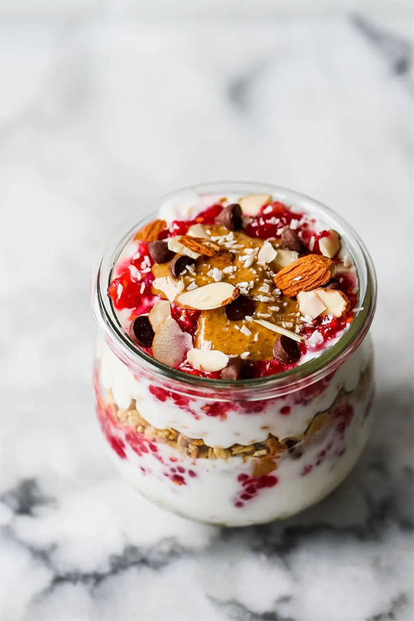

Yogurt Parfait

Description
This healthy homemade yogurt parfait is the perfect breakfast or snack recipe. Layered with granola, yogurt, raspberry jam and almond butter for the perfect creamy and sweet combination. This recipe only takes a few minutes to make and can easily be meal prepped!
Ingredients
- Raspberries (or blackberries as an alternative)
- Chia seeds
- Granola
- Plain yogurt
- Almond butter or peanut butter
- Dark chocolate chips
- Almonds
- Shredded coconut
Steps
- Mash the raspberries and chia seeds together with a fork to make the raspberry jam.
- Using 1 small sealable container or jar, evenly layer with: granola, yogurt, raspberry jam, peanut butter, chocolate chips
- Repeat by adding the layers again. Garnish with sliced almonds and coconut.